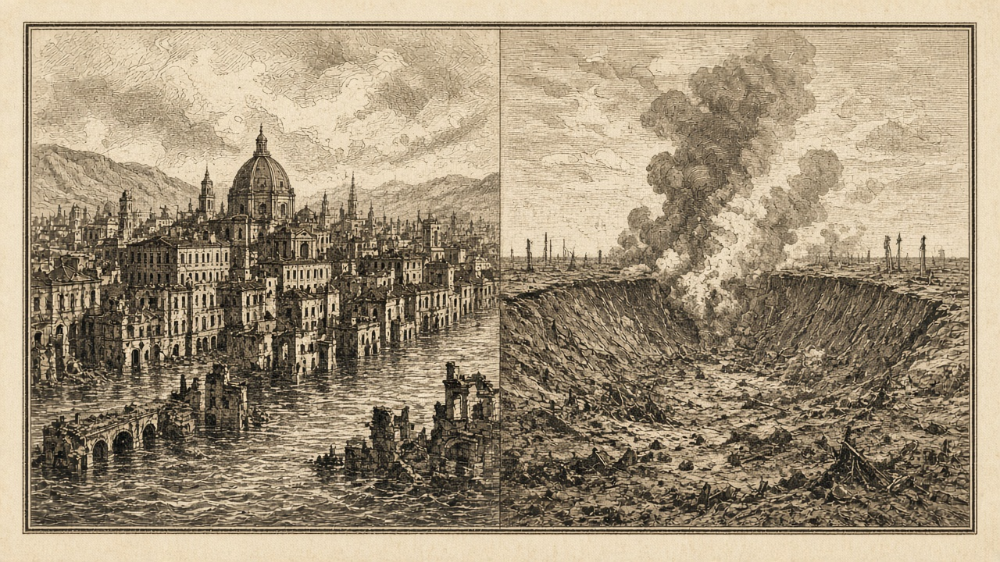

灰岩王国が滅亡 泰平の自爆で首都水没 なのですは紅峰沖に上陸
無人となった灰岩は国として終わり、周辺の港と町は荒地や水没に変わった なのですは紅峰の兵站基地を占領し、予備兵千人が投降した

【総合部】灰岩王国は第183期に滅亡した。泰平天国の防衛施設（39,40）で自爆装置が作動し、隣の首都ロシュグリーズ（39,39）は水没した。兵站基地も水没し、周辺の軍港や町、村、ニュータウンは荒地となった。狐っ娘の尻尾教団、桃谷連邦共和国、泰平、あろあろ国にも被害が及び、あろあろの商船一隻が沈没した。追悼特集は8面。
なのです主義人民共和国は（42,55）で上陸を実行し、紅峰公国の兵站基地（39,58）を占領した。予備兵千人が投降した。陸の公報損害は紅峰五千八百人、なのです三千三百人。紅峰の兵力は三万七千人。詳報は5面。
橙原がなのですへ宣戦 金野からスルガへ五万九千四百人
橙原自治共和国がなのですへ宣戦し、開戦は第188期。金野伯爵領からスルガへ、仕事を求める五万九千四百人が移住した。火災は十四件で、死者は五万五千百人。詳報は2面・6面。